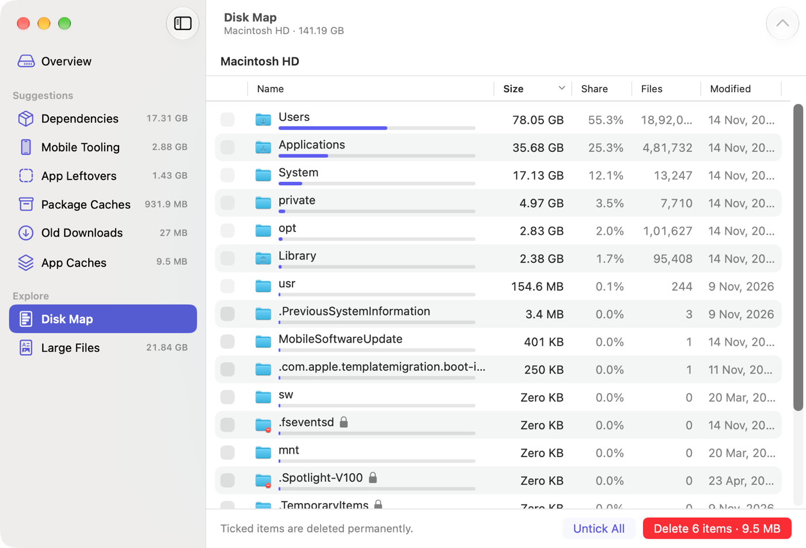
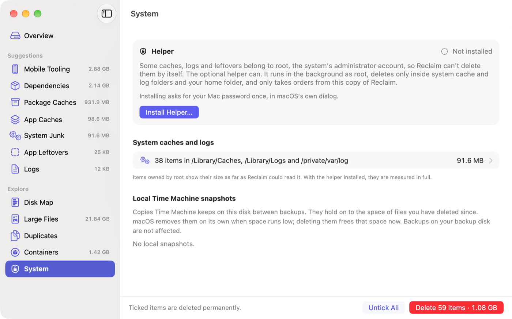
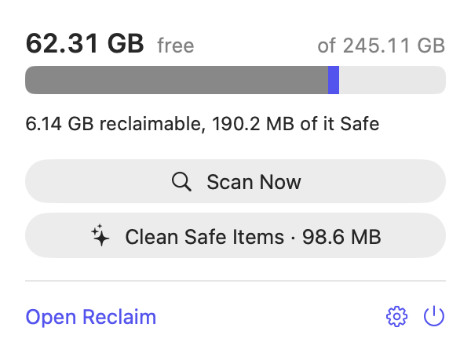

Knows where developer junk hides
Build output, installed dependencies and package-manager caches, matched by rules written from real Macs, never by guesswork.
See every ruleReclaim scans the whole disk, explains what is safe to delete, and frees the space in one click. Built for developer Macs that fill up with build caches, node_modules, simulators and Docker leftovers.
Features
Every suggestion says what it is, why it is listed, and what happens after you delete it.
Build output, installed dependencies and package-manager caches, matched by rules written from real Macs, never by guesswork.
See every ruleSafe rebuilds itself and is ticked for you. Rebuild and Personal wait for your call.
Tick, click, done, with a summary of what was freed and why anything wasn't. Prefer a net? Turn on Move to Trash.
Byte-for-byte matches. APFS copies that share storage are spotted, so the space is real.
Build cache, unused images, stopped containers and volumes, removed with Docker's own commands.
Docker clean-upFree space at a glance, a warning before the disk fills, and daily or weekly scans that can tidy untouched caches on their own.
The disk root, system folders, your home folder and folders like Documents are never deleted as a whole, even through symlinks or .. tricks.
/System/Users/you~/Documents/tmp/../etcEvery folder by size. Drill in and tick anything that isn't protected.
ExploreA locked-down helper removes root-owned caches, logs and Time Machine snapshots.
How it's securedNo account, no analytics, no network access. Your file list never leaves your Mac.
Tour
SwiftUI, light and dark, your accent colour.




How it works
No wizard and no upsell. You stay in control of every file.
Reclaim walks the disk in parallel and measures what files really use, so hard links and sparse disk images are counted correctly.
Suggestions are grouped by kind and labelled Safe, Rebuild or Personal. Select one to see exactly what it is.
Click Delete. Space is freed at once, or moved to the Trash if you prefer, and every run goes into a history.
Safety levels
Rebuilds itself. Nothing to do afterwards.
Comes back after a reinstall or download.
Your data, reported so you can decide.
Yes. Reclaim is open source under the MIT License, with no paid tier, account or tracking.
Cleaning a developer Mac means deleting hundreds of items, and a confirmation per item gets clicked through without reading. Reclaim explains each item instead, ticks only Safe ones, and can never delete protected folders. Want a safety net? Turn on Move to Trash.
It isn't notarized by Apple, which needs a paid developer membership. Open it once through System Settings › Privacy & Security › Open Anyway. See the steps.
To see everything, yes. Without it, Reclaim skips Desktop, Documents, Downloads and other protected folders so macOS doesn't stop the scan to ask about each one.
Download Reclaim, run one scan, and see what your Mac has been hoarding.